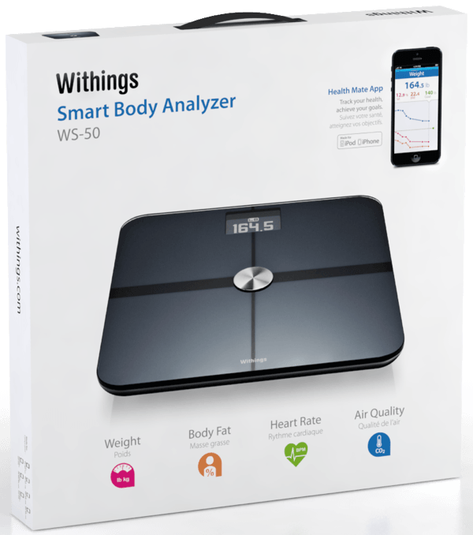

Kablosuz Akilli Tarti - Withings Scale WS-50
Hatirlarsaniz geçtigimiz aylarda "Jawbone UP Incelemesi" baslikli bir yazi paylasmis, spor yapan ve zinde/fit kalmaya dikkat eden iPhone ve iPad kullanicilarinin ilgisini çekebilecek bir bileklik tanitmistim. UP'i halen kullaniyorum ve sayesinde yaklasik 5 kilo verdim. (85 kilo civarindayken su an 80'nin altina düsmüs durumdayim) Elbette UP vücudumdaki yaglari alip götürmedi :) Fakat UP sayesinde gün içinde ne kadar az hareket etttigimi farkettim ve aksam yürüyüslerine (özellikle yemekten sonra) basladim. Bu da dogal olarak kilo vermemde çok faydali oldu. <\p>
Fakat bu sürecin baslarinda kilo takibini evdeki klasik tartiyla yapip sonra da manuel olarak bir yerlere girmem gerekiyordu. Tembel biri oldugum için de "Acaba bu isi akilli bir tarti benim yerime yapamaz mi?" diye düsünerekten hemen kisa bir arastirma içine girdim. Sonra da bu yazinin konusu olan "Withings Smart Body Analyzer WS-50" isimli kablosuz akilli tartiyi kesfettim. O sirada bir arkadasim Amerika'da oldugu ve yakin zamanda Türkiye'ye dönecegi için hemen kendisine siparis verip bir tane edindim. Yeteri kadar deneyimledikten sonra da bir inceleme yazisi paylasayim dedim :) Withings Smart Body Analyzer (WS-50), ilk bakista klasik tartilardan pek bir farki yokmus gibi izlenim veriyor fakat aslinda bir çok özelligi bulunuyor. Elbette klasik bir tarti gibi üzerine çikip tartiliyoruz ama kilomuzu ölçmenin yaninda bir çok özelligi ve yetenegi bulunuyor.
